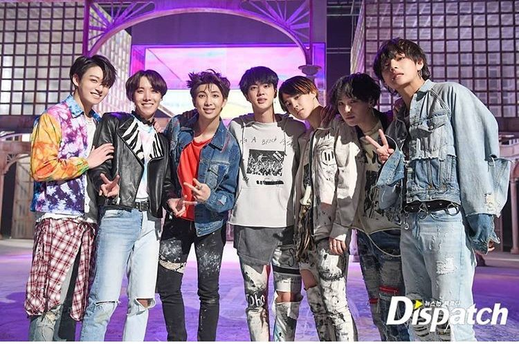

Bangtan with swag
BTS (방탄소년단 / Bangtan Sonyeondan) es un grupo sur-coreano creado en 2013 por Big Hit Entertainment formado por siete miembros, de nacionalidad coreana quienes desempeñan diversos roles en el grupo, destacando canto, baile, composición, producción y creación de letras de canciones, modelaje, entre otros. El grupo esta a cargo del CEO Bang Shihyuk "The Hitman Bang", quien administra las actividades del grupo y ayuda a la toma de decisiones tanto internas como de producción y composición.
Integrantes
- Kim Namjoon (RM)

- Fecha de nacimiento: 12 de septiembre de 1994
- Altura: 1.80 m
- Lugar de nacimiento: Ilsan, Goyang, Corea del Sur
- Idionas: coreano, inglés, japonés
- Estudios: graduado sobresaliente en radiodifusión y arte dramático por la Global Cyber University; estudió en Nueva Zelanda.
- Ingreso a BTS: primer miembro, 2010
- Kim Seokjin (Jin)

- Fecha de nacimiento: 4 de diciembre de 1992
- Altura: 1.78 m
- Lugar de nacimiento: Gwacheon, Gyeonggi-do, Corea del Sur
- Idiomas: coreano, inglés, japonés, algo de chino mandarín
- Estudios: Universidad de Konkuk, grado en arte e interpretación
- Ingreso a BTS: 2011
- Min Yoongi (Suga)

- Fecha de nacimiento: 9 de marzo de 1993
- Altura: 1.72 m
- Lugar de nacimiento: Buk-gu, Daegu, Corea del Sur
- Estudios: Instituto Apgujeong
- Inicios artísticos: rapero alternativo llamado Gloss en D-Town
- Ingreso a BTS: 2010, al principio como productor
- Jung Hoseok (J-hope)

- Fecha de nacimiento: 18 de febrero de 1994
- Altura: 1.78 m
- Lugar de nacimiento: Gwangju, Corea del Sur
- Inicios artísticos: estudió en una famosa academia de danza en Gwangju y tenía un contrato con la compañí musical JYP antes de unirse a Big Hit. También fue miembro de Neuron, un grupo de danza urbana.
- Apodo: Hobi
- Ingreso a BTS: 2010
- Park Jimin (Jimin)

- Fecha de nacimiento: 13 de octubre de 1995
- Altura: 1.73 m
- Lugar de nacimiento: Busan, Corea del Sur
- Estudos: comenzó en la Escuela Secundaria de Busan, después cambió al Instituto Secundario de Artes de Corea y completó su trayectoria en la Global Cyber University.
- Ingreso a BTS: 2012
- Kim Taehyung (V)

- Fecha de nacimiento: 30 de diciembre de 1995
- Altura: 1.78 m
- Lugar de nacimiento: nacido en Daegu, Corea del Sur, criado en Geochang
- Idiomas: coreano y japonés con soltura
- Estudios. Escuela de Arte de Corea y Global Cyber University
- Inicios artísticos: actor de la serie coreana Hwarang
- Ingreso a BTS: 2011
- Jeon Jungkook (Jungkook)

- Fecha de nacimiento: 1 de septiembre de 1997
- Altura: 1.78 m
- Lugar de nacimiento: Busan, Corea del Sur
- Estudios: Escuela de Arte Dramático de Seúl
- Apodos: Kookie, Maknae de Oro
- Ingreso a BTS: 2011
Discografía
Previo a 2013 BTS ha sido activo en su discografía año a año, produciendo junto a el Staff de productores de Big Hit Entertainment, los cuales han variado dependiendo de cada era y de la adquisición de nuevos productores y colaboraciones.
Junto a la agencia, el grupo ha desarrollado una linea de coherencia que comprende diferentes etapas de la juventud y las facetas a las que esta debe enfrentarse.
La calidad y producción musical son excelentes. Tanto es así que tienen un equipo de expertos detrás de cada lanzamiento, y esto es así también para sus álbums. Muchos de ellos tienen 4 versiones coleccionables, con diferentes "extras" o regalitos incluidos.

Haz click aquí para ver la discografía completa de BTS
Videos musicales de BTS (MV)
| Año de estreno |
Nombre de la canción |
Video o imagen |
| 2013 |
No more dream |
|
| 2014 |
Just One Day |
|
| 2015 |
I need u |
|
| 2016 |
Fire |
|
| 2017 |
Not today |
|
| 2018 |
Fake love |
 |
| 2020 |
Black swan |
|
| 2021 |
Butter |
|
Hip Hop Monsters
Los Hip Hop Monsters son (como dice su nombre) monstruos que representan a cada uno de los miembros de BTS, con sus personalidades y todo. Estos son una marca registrada por Big Hit, por lo tanto son las mascotas oficiales del grupo. Todo esto comenzó en el año 2014 y finalizó en el año 2015.
Obten más información sobre las mascotas iniciales de BTS
BT21
BTS y Line Friends unieron fuerza y creatividad para crear estos personajes que estoy segura muchas ARMYS aman. Cada miembro se tomo su tiempo para crear un personaje que no solo Hiciera que ARMY se enamorara, si no toda persona que los vea. Creemos que ellos hicieron un buen trabajo en crear estos personajes.
La historia que ellos nos presenta es la siguiente:
Proveniente del Planeta BT, el Príncipe TATA sueña con difundir el amor por toda la galaxia. Decidiendo que el destino está cerca, TATA convoca al robot guardián VAN para que se prepare para un viaje interestelar a la Tierra. Poco después de su llegada, el Príncipe concluye que el medio más eficaz para conquistar los corazones de los terrícolas es convertirse en un super, no ... algo mucho más ambicioso. UN UNIVERSTAR. Al darse cuenta de que un esfuerzo colectivo es crucial, TATA y VAN buscan aspirantes con ideas afines para compartir el sueño. Pronto descubren 6- KOYA, RJ, SHOOKY, MANG, CHIMMY y COOKY, para convertirse en lo que se conocerá como la sensación de la cultura pop más influyente que la galaxia haya presenciado. BT21.
Obten más información sobre BT21
¿Dónde ver contenido oficial de BTS?
| Página web/ red social |
Descripción |
Logo |
| Weverse Shop |
Una comunidad creada por artistas y fanáticos globales, reacciona a las historias dejadas directamente por Weverse Artists y se comunica con fanáticos de todo el mundo de manera fácil y conveniente. Weverse es donde los artistas y fanáticos globales se unen y crean juntos. |
 |
| Weverse |
Weverse es una aplicación ideal para fans del K-Pop avalada por Big Hit Entertainment, la discografica de los mundialmente conocidos BTS. En esa red podremos conocer a otros fans e informarnos sobre encuentros entre otras funciones. Se trata de una aplicación tipo fancafe, que viene a ser como un lugar de reunión en el que los fans de grupos de K-Pop se reúnen para hablar de sus ídolos e informarse sobre encuentros, conciertos o firmas de discos. La ola de popularidad de estos grupos surcoreanos está creciendo en todo el mundo, y esta aplicación es un buen ejemplo de que sus seguidores cada vez quieren saber más cosas sobre sus ídolos y compartir su amor por las bandas con el resto de fans. |
 |
| Facebook de BTS |
En esta cuenta encontrarás todos los artículos hablando sobre BTS tanto en inglés como en coreano; de igual manera encontrarás fotos oficiales de los chicos. |
 |
| Twitter de BTS |
En esta cuenta encontrarás todos los artículos hablando sobre BTS tanto en inglés como en coreano; también encontrarás fotos y horarios oficiales de cada canció de BTS. |
 |
| Instagram de BTS |
En esta cuenta encontrarás fotos oficiales de cada integrante de BTS. |
 |
| Vlive de BTS |
En esta cuenta podrá tener acceso a videos en vivo de BTS (promociones de discos, conferencias, etc). |
 |
| Tik Tok de BTS |
En esta cuenta podrá tener acceso a videos de 60 segundos o menos donde se le ve a todos los miembros de BTS divirtiéndose juntos. |
|
| Big Hit |
En esta cuenta podrá tener acceso a toda la información oficial de BTS . |
 |
BTS en la televisión
| Programa |
Plataforma |
Descripción |
V LIVE
VLIVE.TV
| Es una cadena online que permite que famosos como BTS conecten de manera directa con los fans. El canal de BTS contiene varias series que incluyen Run BTS! y BTS Gayo!, así como algunas miniseries. BTS tiene 28 millones de seguidores en V Live y no es difícil entender porqué.
| | |
Run BTS!
VLIVE.TV
| Es su espectáculo de variedades en el que los chicos resuelven retos y la pasan bien juntos frente a las cámaras a la vista de todos los fans. Nuestros boy scouts lo dan todo y se visten como estudiantes, se enfrentan a sus miedos, participan en caóticos desafíos de cocina, luchan contra zombies, entre otras actividades. El programa empezó en 2015 y sigue vigente hasta la fecha.
| | |
BTS Gayo!
VLIVE.TV
| Es un concurso musical en el que los miembros participan cada semana. Los retos se centran en distintas facetas de la música, baile, canciones y cultura popular.
| | |
BTS Bon Voyage (temporadas 1 y 2)
VLIVE.TV
| Es un reality que sigue a BTS en sus viajes. La primera temporada se emitió en 2016 y cubre la gira de diez días que ofrecieron en el norte de Europa cuando celebraron su tercer aniversario. La segunda temporada se estrenó un año más tarde e hizo seguimiento de su gira de nueve días por Hawaí.
| | |
Bokbulbok
VLIVE.TV
| Fue un concurso con cinco episodios en el que los miembros del grupo participaban en el espacio de prácticas de la casa de Big Hit. En cada episodio, uno de los integrantes elegía un huevo de plástico de una pecera que contenía un juego o desafío al que todos se enfrentaban después.
| | |
BTS Home Party
VLIVE.TV
| Se celebra cada año como parte de la BTS Festa. A este evento en directo y que tiene lugar en Seúl sólo tienen acceso ciertos miembros de ARMY, pero el video completo de 105 minutos puede verse gratis en el canal de BTS de V Live.
| | |
BTS ARMY Rookie King
Youtube
| Duró ocho episodios durante los inicios de la banda. Los chicos salían cocinando, haciendo el tonto y jugando a los bolos o a otros juegos. El desafío más popular de la serie era Endplate King, en el que seis de los miembros del grupo recibían cartas y uno se salvaba. Cinco de las cartas llevaban escrito "a salvo" y la sexta mostraba una calavera. Al que le tocaba la calavera se llevaba un castigo.
| | |
BTS Burn The Stage
Youtube
| Se emite por Youtube Red. Retrata a la banda durante los trescientos días en los que se prepararon e iniciaron su primera gira mundial. Burn The Stage estrenó su primer episodio semanal en marzo de 2018.
| | |
BTS Festa
Youtube
| Se celebra cada año a partir del 1 de junio para celebrar el aniversario de su debut en 2013. Durante dos semanas, el grupo mima a sus fans ofreciéndoles fotos, canciones y videos gratis.
| | |
Bangtan Bomb
Youtube
| Es una serie de cortos sobre la vida de BTS. Los videos son vlogs improvisados, desde los dos segundos hasta casi diez minutos de duración, en los que los miembros de Bangtan Sonyeondan son ellos mismos, tan adorables como siempre, en su vida cotidiana.
| | |
Vocabulario K-pop
- 4D
- Argot coreano que describe a alguien con una personalidad extraña o única. Es más un elogio que un insulto. También se puede usar cuadno alguien tiene una personalidad fuerte y suele pensar de una manera original y creativa. Los fans dicen que V es bastante 4D.
- Aegyo
- Una acción tierna, como hacer un guiño, formar un corazón con las manos o lanzar un beso. Los integrantes de BTS expresan su amor por los fans con sus adorables movimientos aegyo, lo que los convierte en una fuente imbatible de memes y gifs.
- ARMY
- Es el nombre oficial de los fans de BTS, que significa Adorable Representative MC for Youth (Adorables MC Representantes de la Juventud).
- Bagel
- Alguien con carita de niño y cuerpo sexy y glamuroso, ¡como Park Jimin!
- Bias
- Tu artista favorito, al que apoyas contra viento y marea. No todos los fans de BTS tienen un bias...A la mayoría le cuesta elegir a uno solo.
- Comeback
- El primer lanzamiento de un nuevo tema, álbum o sencillo.
- Hyung
- Hermano mayor.
- Maknae
- El más joven de un grupo (Jungkook es el maknae de BTS).
- Oppa
- Literalmente significa hermano mayor, pero también es un término que las chicas usan cuando hablan de alguien que les gusta.
- Selca
- Combinación de las palabras "self" (uno mismo) y "camera", lo mismo que selfie pero en coreano. Los Bangtan Boys son maestros de la selca y a menudo comparten sus travesuras online para los fans.
- Visual
- El integrante más atractivo del grupo. No tiene por qué se "la voz cantante" de la banda, que suele ser el miembro más popular. El visual de BTS es Jin, que se describe a sí mismo como "Wordwilde Handsome".